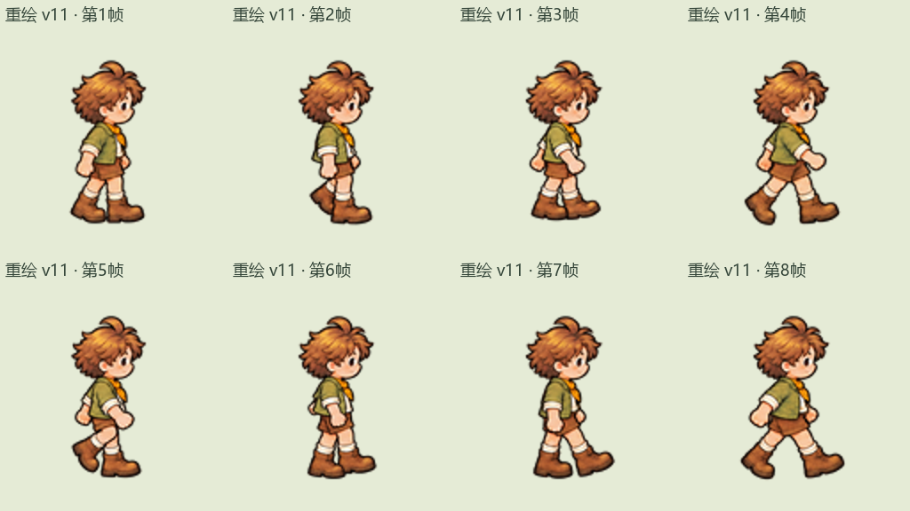

v11 重绘预览 · 沿用 v08 的 8 个姿势
逐帧对照原动作，检查头、身体、手脚的比例与清晰度。正视和背视作为同尺度参考。
正在载入…
v08 原姿势 · 对照
原帧保留 · 同步第1～8帧
v11 整套重绘 · 候选
统一身体样板 · 128×128
正视 · 已确认参考
原动作 · 同倍率显示
背视 · 已确认参考
原动作 · 同倍率显示
本版按 v08 的逐帧姿势重绘完整侧视人物，保留原有动作顺序和前后遮挡。原速检查循环，半速或帧号检查姿势。仍是待确认预览，游戏素材尚未替换。
半速新旧对照 · 三视图动图 · 逐帧放大对照 · 制作记录
